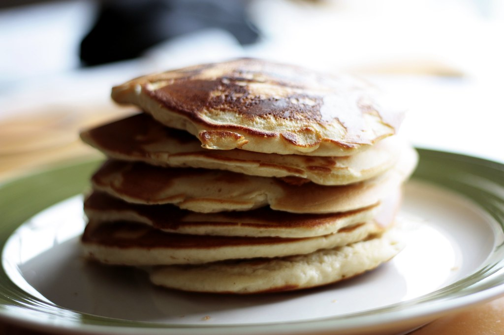

Home
Pumpkin pancakes recipe

Description
Wonderful recipe by Grandma Helen that Maria loves! Serve with syrup.
Ingredients
- 1 ¼ cups buttermilk
- ¾ cup pumpkin puree
- 4 large eggs, separated
- ¼ cup white sugar
- ¾ teaspoon vanilla extract
- ¼ cup unsalted butter, melted
- 1 ⅓ cups cake flour
- 1 ¾ teaspoons pumpkin pie spice
- 1 teaspoon baking soda
- 1 teaspoon baking powder
- ½ teaspoon salt
Steps
- Whisk buttermilk, pumpkin puree, egg yolks, sugar, and vanilla extract together
in a bowl until blended. Whisk in melted butter.
- Whisk cake flour, pumpkin pie spice, baking soda, baking powder, and salt together
in a bowl. Add flour mixture to buttermilk mixture and whisk to combine.
- Beat egg whites in a glass or metal bowl until soft peaks form. Lift your beater or
whisk straight up: the egg whites will form soft mounds rather than a sharp peak.
Fold egg whites into buttermilk-flour mixture to form pancake batter.
- Heat a lightly oiled griddle or skillet over medium heat. Drop batter by large spoonfuls
onto the griddle and cook until bubbles form on top, 1 to 2 minutes. Flip and cook until
browned on the other side, 1 to 2 minutes. Repeat with remaining batter.